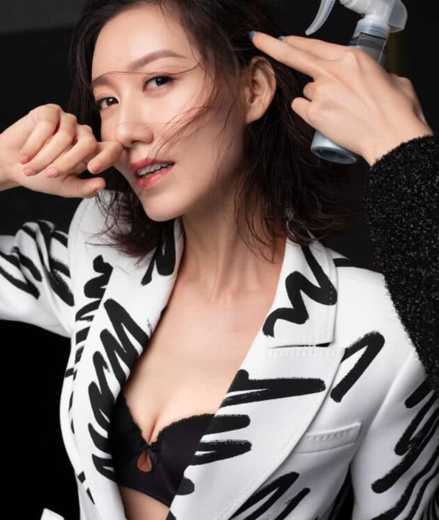

原图

blur[高斯模糊]{{blurVal}}px
px
grayscale[灰度][default: 0]{{grayscaleVal}}%
[0% ~ 100%]
contrast[对比度]{{contrastVal}}%
[0% ~ 100%]
hue-rotate[色相旋转]{{hueRotateVal}}deg
[0deg ~ 360deg]
invert[反转]{{invertVal}}%
[0% ~ 100%]
opacity[透明度]{{opacityVal}}%
[0% ~ 100%]
saturate[饱和度]{{saturateVal}}%
[0% ~ 100%]
brightness[亮度]{{brightnessVal}}%
[0% ~ 100%]
sepia[深褐色]{{sepiaVal}}%
[0% ~ 100%]
drop-shadow[阴影]
offset-x:
offset-y:
blur-radius:
spread-radius:
color:
参考资料：
MDN filter